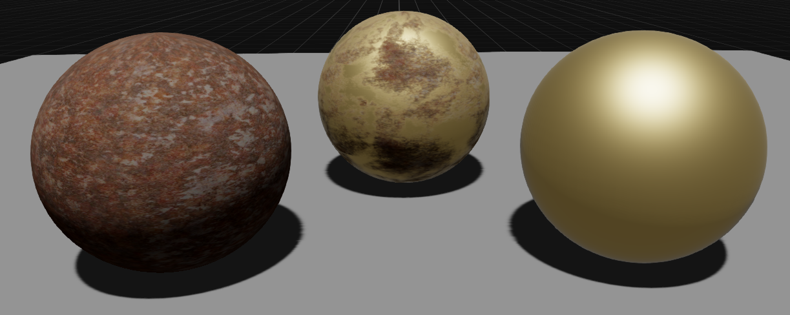
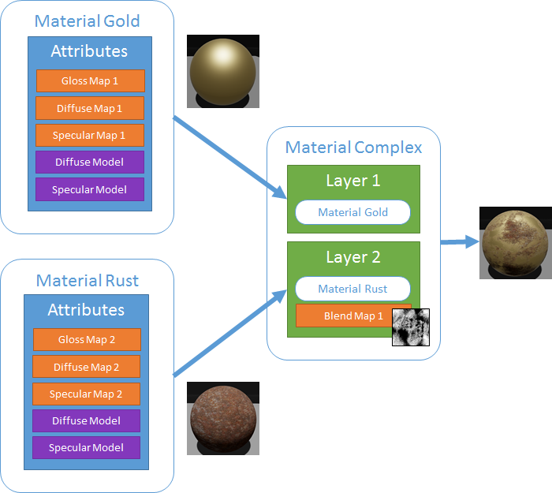
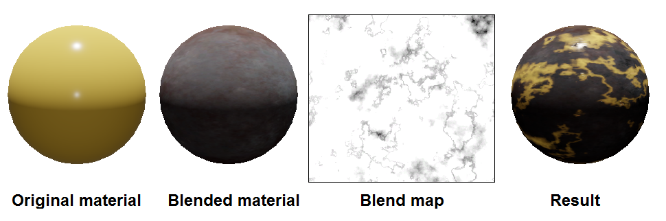
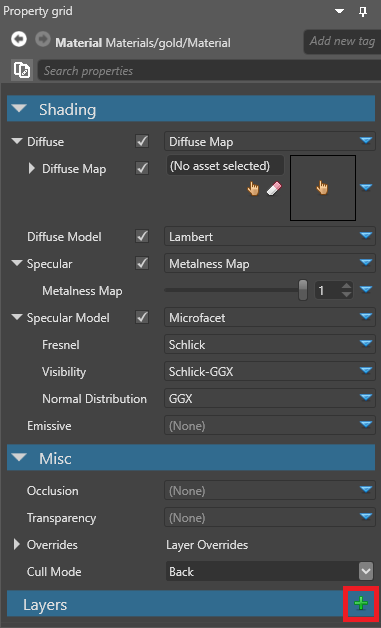
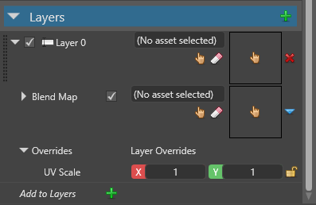
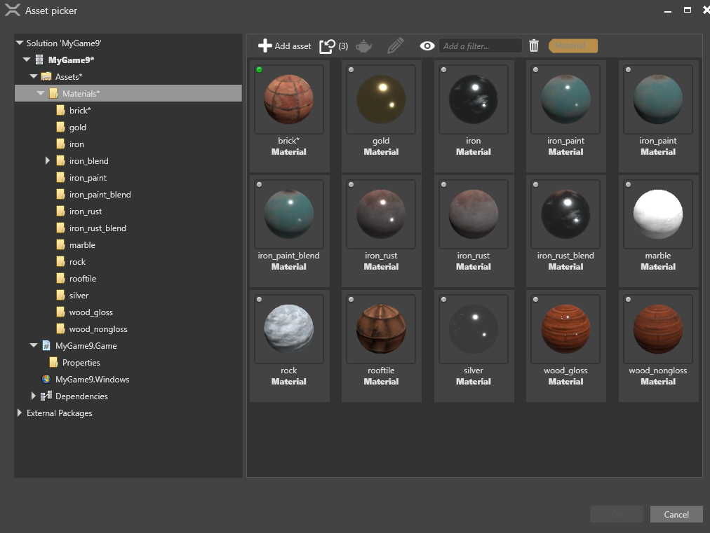
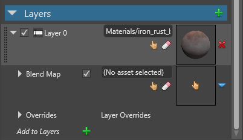
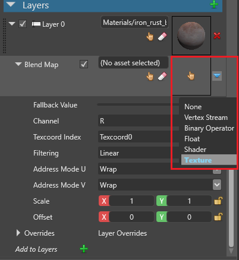

マテリアル レイヤー
中級 アーティスト プログラマー
マテリアルのレイヤーを組み合わせて、より複雑なマテリアルを作ることができます。例えば、次のスクリーンショットは、錆のマテリアル（左）と金のマテリアル（右）を合成したもの（中）を示しています。

次の図は、上のスクリーンショットで合成されたマテリアルの定義を示しています。

ブレンドマップ
ブレンドマップは、Game Studio がレイヤーを合成する方法を決めるためのマテリアル マップです。例えば、テクスチャーをブレンドマップとして使用することができます。


ブレンドマップのテクスチャーが、合成後のパターンとどのように対応しているかに注目してください。
ブレンドマップは、他のマテリアルマップと同じように機能します。詳細については、マテリアルマップを参照してください。
シェーディングモデル
Stride では、マテリアルのシェーディングモデル（例：ディフューズモデル、スペキュラモデルなど）が同じであるか否かによって、マテリアルの合成方法が変わります。
シェーディングモデルが同じであるマテリアルを合成する場合、Stride はマテリアルの属性を収集し、そのシェーディングモデルをすべてのマテリアルに適用します。これにより、GPU を節約することができます。
マテリアルが異なるシェーディングモデルを持っている場合、Stride は各マテリアルのシェーディングモデルをそのマテリアル属性に適用し、結果を合成します。これはより多くの GPU パワーを消費します。
レイヤーを追加する
レイヤーを追加したいマテリアルを選択します。
プロパティグリッドで、Layers の横にある
 （追加）をクリックします。
（追加）をクリックします。
Game Studio は、マテリアルにレイヤーを追加します。

レイヤーの横にある
 （アセットの選択）をクリックします。
（アセットの選択）をクリックします。Select an asset ウィンドウが開きます。

レイヤーとして追加したいマテリアルを指定し、[OK] をクリックします。
Game Studio は、マテリアルをレイヤーとして追加します。

Blend Map の横にある
 （(置換）をクリックし、レイヤーの合成に使用したいブレンドマップの種類を選択します。ブレンドマップの詳細については、マテリアルマップを参照してください。
（(置換）をクリックし、レイヤーの合成に使用したいブレンドマップの種類を選択します。ブレンドマップの詳細については、マテリアルマップを参照してください。
Game Studio では、指定したブレンドマップを使ってマテリアルレイヤーを合成します。必要な数だけレイヤーを追加することができます。
レイヤープロパティ
| プロパティ | 説明 |
|---|---|
| Material | このレイヤーに合成されているマテリアル |
| Blend Map | このレイヤーと上のレイヤーを合成するためのブレンドマップ |
| Layer Overrides | レイヤーのマテリアルの全テクスチャの UV に適用される UV スケール（オクルージョンマップを除く） |